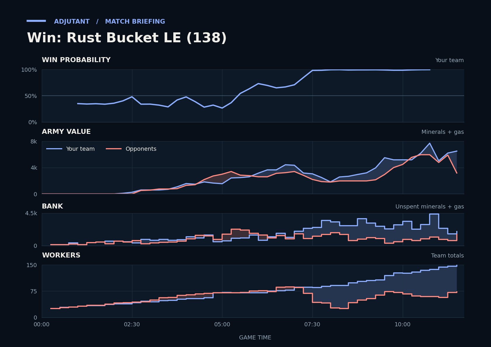

Win: Rust Bucket LE (138)
Provisional debrief. The full report (timeline, insights and analysis) is being generated.

**Win.** Your army killed 66 workers around MaximA's main and natural, and the opponents' economy never caught up.
**Why**
- 6:51–8:12: Scallop's Banshees and TakeTheTip's Roaches killed Probes and Drones, and MaximA's workers fell to 11.
- 10:00: Unseen, TakeTheTip's income was about 4,000 a minute, above each opponent's, funding a larger Roach and Hydralisk army.
- 11:21–11:39: Luna and MaximA attacked TakeTheTip's fourth and lost 1.8x as much army; MaximA had none left.